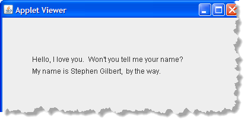

Java applets are Java programs that run "inside" a Web page. But, while Java applets are run differently than Java applications, the mechanical process of creating an applet is identical.
Hands On: Your First Java Applet
To create your first Java applet, just click the New button
to create an untitled definitions document. Then, type in the code
I've provided here:
 As before, replace the placeholders with your name (in both the
heading and the message) and the date (in the heading).
As before, replace the placeholders with your name (in both the
heading and the message) and the date (in the heading).
Save, Compile and Run
Click the Save button to save your applet. DrJava will automatically
give it a name (MyFirstJavaApplet.java). Save the file in your
Week02 folder. Then, compile it just as you did the
previous two programs. If you have any syntax errors, correct your
code and recompile.
Running an applet is a little different than running an application.
- First, an applet can't be run directly. Since it is designed to be viewed inside your Web browser, it has to be loaded by being referencing in an HTML page, using an applet tag.
-
Second, an applet doesn't create its own window, but needs
another program, like a Web browser, to supply its display
window.

Fortunately, (as you might have guessed), DrJava takes care of both of those details for you. When you click the Run button, DrJava notices that you are trying to run a Java applet and it opens a special Applet Viewer program, and loads your new applet into it, like this.